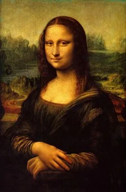
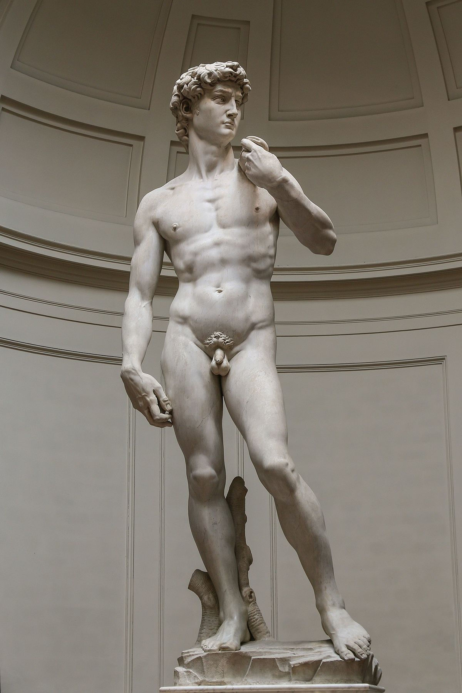

Primer encuentro

Observa esta imagen y adivina quienes son estos personajes.
- ¿ Piensas que estas estatuas representan un periodo importante de la historia?
- Encuentra un título para esta foto.
Observa esta imagen y adivina quienes son estos personajes.
- ¿ Piensas que estas estatuas representan un periodo importante de la historia?
- Encuentra un título para esta foto.
¿Quiénes son estos reyes?
Los reyes católicos son reyes españoles llamados así porque los dos eran católicos. Son Isabel I de Castilla y Fernando II de Aragón. En 1469, se casan para unificar España y quieren evangelizar todo el territorio español para finalmente conseguirlo en 1492, con la toma de Granada.
Estos reyes unifican sus reinos: el de Castilla y el de Aragón. Ellos representan la transición entre la Edad Media y la edad Moderna.
Reinan cada uno en su territorio, pero toman las decisiones juntos. La monarquía que crean es fuerte limitando el poder de los nobles y de los eclesiásticos. Desean también una unificación religiosa en todo el territorio. Para conseguirlo, van a expulsar a los judíos y desarrollar la Inquisición.
La Corona de Castilla va a financiar las primeras travesías trasatlánticas.
Las diferentes conquistas de territorios van a traer riquezas a todos y los comerciantes van a ser ricos y poderosos. Durante este período, la agricultura, la ganadería y la exportación de materias primas favorecen la economía.
Los reyes católicos desarrollan alianzas matrimoniales con familias reales europeas casando a sus hijos. Los nobles pierden su poder y las monarquías se vuelven autoritarias en Europa.
Grandes descubrimientos aparecen como por ejemplo la imprenta en 1454. Gutenberg es el que desarrolla y perfecciona el sistema de la imprenta.

A finales del siglo XV, un movimiento artístico y cultural aparece en Italia y se desarrolla en Europa, se llama el Renacimiento. Los artistas se inspiran en la Antigüedad griega y romana para crear esculturas, como en la foto de la Fontana di Trevi, pero van también a crear obras en diferentes campos como en la pintura, literatura y las ciencias. rtístico y cultural aparece en Italia y se desarrolla en Europa, se llama el Renacimiento.
Observa estas imgenes de obras importantes del Renacimiento, ¿serías capaz de reconocerlas?



Obra publicada con Licencia Creative Commons Reconocimiento Compartir igual 4.0